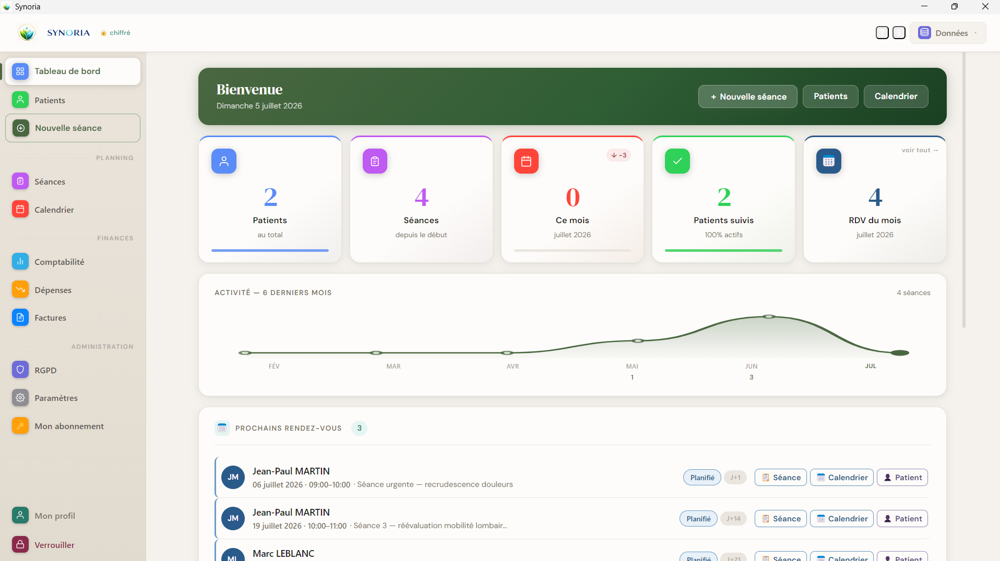

Patients
Coordonnées, antécédents, alertes, consentement RGPD, notes et historique complet des séances.
Application de bureau pour Windows et macOS, Synoria centralise dossiers patients, séances, rendez-vous, agenda professionnel, facturation et suivi d'activité. Les données du cabinet restent sur votre ordinateur, chiffrées et maîtrisées.

Synoria s'adresse aux praticiens indépendants qui souhaitent organiser leurs dossiers patients, leurs séances, leurs rendez-vous, leur facturation et leur activité quotidienne depuis une seule application. Il fonctionne sur Windows et macOS et conserve les données du cabinet localement sur le poste du praticien.
Synoria évite de disperser les informations entre un agenda, des notes, un tableur et des modèles de facture.
Coordonnées, antécédents, alertes, consentement RGPD, notes et historique complet des séances.
Historique complet, texte enrichi, duplication, dossier patient PDF et exports Excel, JSON et impression.
Planning horaire, rendez-vous patients ou invités, rappels J-1 et synchronisation Google Calendar.
Factures numérotées, suivi des paiements, dépenses, recettes mensuelles et export URSAF comptable.
L'utilisateur peut connecter son propre compte Google pour synchroniser son agenda professionnel. Cette connexion est facultative et peut être révoquée à tout moment.
Consulter la politique de confidentialité Conditions d'utilisation et de vente
Aucune donnée Google n'est vendue, utilisée à des fins publicitaires ou partagée avec des tiers.
Le tableau de bord centralise l'essentiel : statistiques, graphique d'activité sur 6 mois et prochains rendez-vous à venir.
Synoria fonctionne en formulaire généraliste ou via des plugins métier : MTC, ostéopathie, kinésiologie et naturopathie.

Synoria inclut des formulaires spécialisés pour les principales pratiques de santé naturelle.
Bilan énergétique, langue, pouls, cinq éléments, diagnostic MTC, points d'acupuncture et plantes.
Bilan musculaire, corrections énergétiques, protocoles de séance et plan de suivi personnalisé.
Zones traitées sur carte corporelle, techniques structurelles, compte-rendu de consultation et plan de traitement.
Anamnèse complète, bilan vitalité, protocoles naturopathiques, compléments et hygiène de vie.

Rendez-vous, consultations réalisées et factures sont reliés au dossier patient pour garder une vision cohérente de l'activité.

Synoria est conçu pour une utilisation locale : mot de passe, chiffrement de la base, verrouillage automatique, sauvegardes chiffrées et registre RGPD intégré.
Aucun cloud obligatoire. Les données ne quittent jamais le poste du praticien.
Base de données protégée par AES-256-GCM et dérivation PBKDF2 du mot de passe.
Consentements patients, journal d'accès et registre de traitement Article 30.
Exports chiffrés, vérification d'intégrité et restauration des données.
Non. Les dossiers patients sont stockés sur votre ordinateur uniquement, chiffrés par AES-256-GCM. Ils ne quittent jamais votre poste. Seules les informations de compte et de licence (email, statut) transitent par nos serveurs.
Oui. Synoria intègre la gestion du consentement patient, un journal d'accès automatique, des alertes de conservation et un registre de traitement Article 30 exportable en HTML. Vos données restant locales, vous êtes le seul responsable de traitement — Synoria n'est pas sous-traitant.
Oui. Le logiciel fonctionne entièrement hors ligne au quotidien. Une connexion est nécessaire uniquement pour la vérification de licence périodique (environ une fois par semaine). En cas d'absence prolongée de réseau, un mode de grâce maintient l'accès complet.
Oui. L'essai dure 14 jours, aucun prélèvement n'est effectué avant son terme. Annulation possible à tout moment depuis votre espace "Mon abonnement", sans frais ni justification.
Le mot de passe protège le chiffrement de votre base de données — il n'est pas récupérable par notre équipe. Notez-le dans un gestionnaire de mots de passe. Il est différent du mot de passe de votre espace "Mon abonnement", lui, récupérable par email.
Disponible pour Windows 10/11 et macOS. Un abonnement Synoria actif est requis pour utiliser le logiciel.